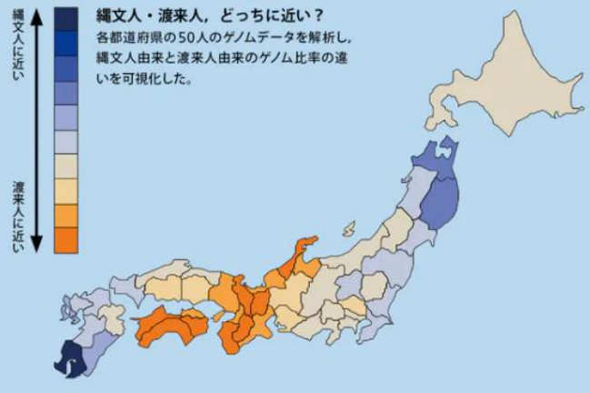
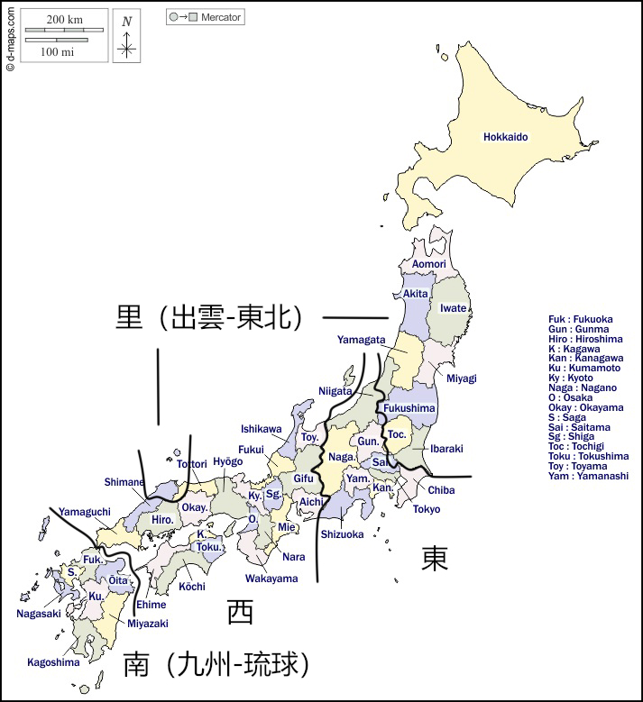
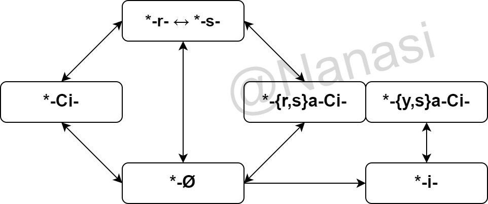

罗马字表记
五十音图
表格 | 本体系的标准语罗马字表记
现代方言音韵
表格 | 本体系的方言罗马字表记
附录
行政区划
表格 | 行政区划
图集
| 说明 | 图（点击放大） |
|---|---|
| 古坟势力分布 |  |
| 国造 |  |
| 五畿七道 |  |
| 国县对照 |  |
| 都道府县 |  |
| 对各都道府县五十人的常染色体基因组的 183,708 个单碱基多态性进行分析 |
 |
| 日本地形 |  |
| 萨南群岛 |  |
| 琉球群岛 |  |
| 北琉球区域：奄美群岛与冲绳群岛 |  |
| 奄美群岛 |  |
| 冲绳群岛 |  |
| 冲绳本岛 |  |
| 南琉球群岛：宫古群岛与八重山群岛 |  |
| 宫古群岛 |  |
| 八重山群岛 |  |
| 断定的分布 |  |
| 四个假名混同情况分布 |  |
| 日琉语方言划分（东条操学说） |  |
| 日琉语方言划分（de Boer 学说） |  |
| 方言调式分布 |   |
| 高元音央化分布 |  |
| 动词及物性转换 |  |
{kind=link}
参考
日琉祖语及发展
Alexander Vovin - Japanese, Korean, and Other 'Non-Altaic' Languages
Alexander Vovin - Koreo-Japonica (A Re-evaluation of a Common Genetic Origin)
Alexander Vovin - Long Vowels in Proto-Japanese
Alexander
Vovin - Names of Large Exotic Animals and the Urheimat of Japonic
Alexander Vovin - On one more source of Old Japanese i2
Alexander Vovin - Out of Southern China
Alexander Vovin - Proto-Japanese
Beyond The Accent System
Alexander Vovin - Why Japonic Is Not Demonstrably Related To ‘Altaic’ Or Korean
Bjarke Frellesvig - On the Reconstruction of Pre-Old Japanese Morphology: OJ Grammatical Morphemes
Reflecting Pre-OJ *k- ~ *s-
Bjarke Frellesvig and John Whitman - Proto-Japanese Issues and Prospects
Bjarke Frellesvig and John Whitman - The Vowels of Proto-Japanese
Hisao Kakehi, Ikuhiro
Tamori, Lawrence Schourup - Dictionary of Iconic Expressions in Japanese
John Whitman - A rule of medial *-r- loss in pre-Old Japanese
John Whitman - The Relationship Between Japanese and
Korean
John Whitman - 日琉祖語の音韻体系と連体形・已然形の起源
Kenan Celik - （先）日琉祖語の語形成に関する試論
Kerri L. Russell - A Reconstruction and Morphophonemic Analysis of Proto-Japonic Verbal Morphology
Samuel E. Martin - The Japanese Language Through Time
平子達也、五十嵐陽介、Thomas Pellard - 日本語・琉球諸語による 歴史比較言語学
日语及本土方言
Alexander Vovin - A Descriptive and Comparative Grammar of Western Old Japanese
Alexander Vovin (Translator) - Man’yōshū, Book 1, 2, 5, 13, 14, 17, 18, 19, A New English Translation
Containing the Original Text, Kana Transliteration, Romanization, Glossing and Commentary
Alexander Vovin - The Footprints of the Buddha
Alexander Vovin - 上代日本語と古代・中世韓国語の「水」と「涙」
Alexander
Vovin - 上代日本列島の民族言語史
Alexander Vovin - 縄文時代から上代までの日本列島：言語は何語？
Alexander Vovin - 神聖の剣と魔法の領巾 ―言語学と歴史学の接点―
Alexander Vovin - 琉球語、上代日本語と周辺の諸言語 ―再構と接点の諸問題―
Bjarke Frellesvig - A History of the Japanese Language
Bjarke
Frellesvig - Old Japanese Loanwords
Elisabeth M. de Boer - The classification of the Japonic languages
Gisaburo N. Kiyose, Christopher I. Beckwith - On the Words for Animals
in the Japanese Zodiac
John Whitman - A Korean Grammatical Borrowing in Early Middle Japanese Kunten Texts and its Relation to the Syntactic Alignment of Earlier Korean and Japanese
Thomas
Pellard - A new local indicator of spatial autocorrelation identifies clusters of high rendaku frequency in Japanese place names
Thomas Pellard - The comparative study of the Japonic
languages
Wikipedia - https://www.wikipedia.org/（日本語の方言、日本語の方言の比較表、日本語の方言のアクセント、日本語の乱れ 等）
Zachary Read - https://www.jlect.com/
五十嵐陽介 - 琉球語・八丈語以外の非中央語系ジャポニック諸語の系統
岩波書店 - 広辞苑 第六版
川野絵梨
- 中世文書の日本語史的研究
木部暢子 - 言語地図の一解釈 : 「捨てる」の九州方言
金田一京助、五十嵐仁一 - 上代仮名遣辞典
金田一春彦 等 - 日本語大辞典
小学馆 - 日本国語大辞典 第二版
田中健彦 - 万葉仮名甲類乙類音韻の研究
徳川宗賢 - Towards a Family Tree for
Accent in Japanese Dialects
那須昭夫 - オノマトペの語形成とレベル順序づけ
服部四郎 - Japanese Dialects
早田輝洋 - 上代日本語の音節構造とオ列甲乙の別
日野資成 - 上代の接頭語「い」「さ」の機能について
藤井游惟 - 白村江敗戦と上代特殊仮名遣い
半岛日语
Alexander Vovin - Cin-Han and Silla words in Chinese Transcription
Alexander Vovin - From Koguryǒ to T’amna
Alexander Vovin - Origins of the Japanese Language
Minerva Scientia
(Youtube) - 魏志倭人伝の完全解読・最新私見(暫定) とりあえず人名のみ
Minerva Scientia (Youtube) - 古代朝鮮の日本語：三韓地名を謎解きする
Minerva Scientia (Youtube) - 古代日本語と古代朝鮮語の雑居
Minerva Scientia (Youtube) - 古代日本史：日本神話と邪馬台国の謎解き【私見】
Minerva
Scientia (Youtube) - 邪馬台国前後の古代日本史(あやしい)
伊藤英人 - 韓倭関係語探源
伊藤英人 - 「高句麗地名」中の倭語と韓語
伊藤英人 - 大陸倭語と日本語の起源
伊藤英人 - 朝鮮半島における言語接触と大陸倭語
高木雅弘 - 『三國史記』｢地理志｣の高句麗地名漢字：おもに日本語との比較による考証
常藍守奏
= 尹熙洙 - On the Silla royal titles 麻立干 mae lip kan and 寐錦 mjijH kimX
上代东国方言
Alexander Vovin - The Eastern Old Japanese Corpus and Dictionary
John E. Kupchik - A Grammar of the Eastern Old Japanese Dialects
John E. Kupchik - Azuma Old Japanese A Comparative Grammar and Reconstruction
John
E. Kupchik - On the orthography and phonetics of the Azuma Old Japanese dialects
Thomas Pellard - Proto-Japonic *e and *o in Eastern Old Japanese
八丈方言
John E. Kupchik - Ainu loanwords in Hachijō
風間伸次郎 - 八丈型基層言語と日本語の重層性
中本正智 - 八丈島方言の研究 ―語彙的特色と人体語彙―
八丈町教育委員会 - 島ことばを 話そう 伝えよう!
平子達也、Thomas Pellard - 八丈語の古さと新しさ
琉球语
Aleksandra Jarosz - Innovations, distribution gaps and mirror images: The reflexes of Proto-Ryukyuan close vowels in a post-nasal position
Aleksandra Jarosz - Non-Core Vocabulary Cognates
in Ryukyuan and Kyushu
Aleksandra Jarosz - Old Japanese Post-Nasal Non-Back Close Vowels in a Comparative Perspective
Aleksandra Jarosz - Reflexes of Proto-Ryukyuan *i and *u in Miyakoan
as a chain shift
Alexander Vovin - The Language of the Old-Okinawan Omoro Sōshi
Alexander Vovin - 琉球祖語の語中における有声子音の再建について
Giuseppe Pappalardo - 琉球方言新資料を用いた上代特殊仮名遣いの検討
John Kupchik - Austronesian
lights the way: The origins of the words for ‘sun’ and other celestial vocabulary in Old Ryukyuan
John R. Bentley - A Linguistic History of the Forgotten Islands_ A Reconstruction of the Proto-language
of the Southern Ryūkyūs
Kenan Celik - 南琉球宮古語史
Maner Lawton Thorpe - Ryukyuan Language History
Patrick Heinrich, Shinsho Miyara, Michinori Shimoji - Handbook
of the Ryukyuan Languages (History, Structure, and Use)
Thomas Pellard - A (more) comparative approach to some Japanese etymologies
Thomas Pellard - Ryukyuan and the reconstruction of
proto-Japanese-Ryukyuan
Thomas Pellard - Ryukyuan perspectives on the proto-Japonic vowel system
Thomas Pellard - The historical position of the Ryukyuan Languages
Thomas Pellard - The linguistic
archeology of the Ryukyu Islands
Thomas Pellard - Typological and historical-comparative perspectives on tone and vowel length in Ryukyuan
Thomas Pellard - Why it is important to study the
Ryukyuan languages - The example of Ogami Ryukyuan -
Thomas Pellard - 日琉諸語の系統分類と分岐について
Thomas Pellard - 日琉祖語の分岐年代
Thomas Pellard - 日本列島の言語の多様性 — 琉球諸語を中心に
—
Thomas Pellard - 琉球諸語の古さと新しさ — 母音と子音について —
Thomas Pellard - 琉球諸語の母音体系の形成過程
Tyler Lau - Reevaluating the Diphthong Mergers in Japono-Ryukyuan
Wayne P. Lawrence
- アクセント変化から見た琉球方言の系統樹と日本祖語音調から見た琉球祖語音調
Wayne P. Lawrence - 沖縄方言群の下位区分について
Wayne P. Lawrence - 喜界島方言の系統的位置について
Wayne P. Lawrence - 竹富島方言アクセントと「系列別語彙」 ―附 竹富島方言版「北風と太陽」―
Wayne P. Lawrence
- 竹富島方言の a/ǝ について
Wayne P. Lawrence - 八重山方言の区画について
Wayne P. Lawrence - 与那国方言の系統的位置
Wayne P. Lawrence - 琉球祖語 *kaja 考
Wayne P. Lawrence - 琉球方言 ｢焼べる」考
丁鋒 - 日漢琉漢對音與明清官話音研究
林智凱
- A Reconstruction of Old Okinawan A Corpus-based Approach
林智凱 - 琉球語音演變：以韓語文獻為主
五十嵐陽介 - アクセント型の対応に基づいて日琉祖語を再建するための語彙リスト「日琉語類別語彙」
五十嵐陽介 - 分岐学的手法に基づいた日本語・琉球語諸方言の系統分類の試み
五十嵐陽介 - 九州語と琉球語からなる「南日本語派」は成立するか？：共通改新としての九州・琉球同源語に焦点を置いた系統樹構築
五十嵐陽介
- 九州・琉球同源語調査票
五十嵐陽介 - 共通の改新に基づく分岐学的手法を用いた日本語諸方言の系統分類：南日本語派（琉球を含む）と東日本語派（八丈を含む）の提唱
五十嵐陽介 - 日琉語類別語彙 ver20190517(ver.7)
五十嵐陽介 - 3 拍名詞第 4 類における本土日本語と琉球語間の 1 対 2 のアクセント型の対応について
五十嵐陽介
- 琉球語を排除した「日本語派」なる系統群は果たして成立するのか？―「九州・琉球語派」と「中央日本語派」の提唱―
五十嵐陽介 等 - 琉球宮古語池間方言のアクセント体系は三型であって二型ではない
加治工真市 - 南琉球方言概説
狩俣繁久 - 奄美沖縄方言群における沖永良部方言の位置づけ
狩俣繁久 - 琉球語研究における系統樹研究の可能性
狩俣繁久
- 琉球八重山方言の比較歴史方言学に関する基礎的研究―波照間白保方言の比較方言学的研究―
衣畑智秀、林由華 - 琉球語宮古狩俣方言の音韻と文法
木部暢子 - 奄美の方言
下地理則 - Number in Japonic Family
下地理則 - 南琉球宮古伊良部島方言の m 語尾終止形の機能
外間守善 - おもろ語「うりずん」と「若夏」
富刀壯英 -
「ドゥナン」（与那国）語源考
常藍守奏 = 尹熙洙 - Old Kyushu loanwords in Proto-Ryukyuan
中澤光平 - 琉球祖語における非狭母音 *e, *o の再建の再検討
仲原穣 - 小浜方言と宮良方言の音韻の比較研究
松森晶子 - 北琉球におけるC系列2音節名詞の語頭音節の長音化 ― その原因について考える ―
日琉语音调
Elisabeth M. de Boer - The historical development of Japanese tone. Part I: From proto-Japanese to the modern dialects. Part II: The introduction and adaptation of the Middle Chinese tones in Japan
Elisabeth
M. de Boer - The origin of alternations in initial pitch in the verbal paradigms of the Central Japanese (Kyoto type) accent systems
Elisabeth M. de Boer - The preservation of proto-Japanese
tone class 2.5 in the Izumo region explained
五十嵐陽介 - 2 音節名詞第 4/5 類に対応する琉球祖語 B 類は改新であるとする仮説
上野善道 - 琉球与那国方言体言のアクセント資料
島袋盛世 - The Accentual History of the Japanese and Ryukyuan Languages
A Reconstruction
Ainu 语
Alexander Vovin - A Reconstruction of Proto-Ainu
Alexander Vovin - Ainu Elements in Early Japonic
Alexander Vovin - 日本語の起源と消滅危機言語
Alexander Vovin - 萬葉集と風土記に見られる不思議な言葉と上代日本列島に於けるアイヌ語の分布
Edwin
Everhart - Phonological Change in Japanese-Ainu Loanwords
Rev. John Batchelor F. R. G. S. - An Ainu-English-Japanese Dictionary (Including a Grammar of the Ainu Language)
朝鲜-韩语
Alexander Vovin - Old Korean and Proto-Korean *r and *l Revisited
John Whitman - The Cambridge Handbook of Korean Linguistics
Wiktionary - https://www.wiktionary.org/（中世朝鲜语资料等）
趙義成 - 中世紀朝鮮語入門
韩国国立国语院
- https://krdict.korean.go.kr/chn/mainAction
汉语
poem (Zhihu) - 廣韻(20170209)
William H. Baxter, Laurent Sagart - Old Chinese: A New Reconstruction
高本汉 - 中国音韵学研究
蒲立本 - 上古汉语的辅音系统
王力 - 王力文集
郑张尚芳 - 上古音系
南岛语
Alexander Vovin - Austronesians in the Northern Waters?
Martine Robbeets - Austronesian influence and Transeurasian ancestry in Japanese
Robert Blust, Stephen Trussel - Austronesian
Comparative Dictionary, web edition (https://www.trussel2.com/ACD/)
尼夫赫语
宮野聡 - A Chronological Sketch of the Amuro-Koreanic Parallelism
宮野聡 - 日本・朝鮮におけるニヴフ語要素 —アムール語族を軸とした北東アジア言語史考察―
宮野聡 - 上代日本語「堅香子／カタカゴ１」の語源
宮野聡 - 早良（さわら）という地名について雑考
宮野聡 - ニヴフ語と朝鮮語の音韻史の対照的・通時的研究
(ver. 2020.1.7)
突厥、蒙古、满-通古斯语等（“狭义阿尔泰语系”、“泛欧亚语”）
Martine Robbeets - Diachrony of Verb Morphology. Japanese and the Transeurasian Languages
Martine Robbeets - Is Japanese related to Korean, Tungusic, Mongolic and Turkic
Martine Robbeets
- Paradigm Change In the Transeurasian languages and beyond
Martine Robbeets - Shared Grammaticalization With special focus on the Transeurasian languages
Martine Robbeets - The
Oxford Guide to the Transeurasian Languages
Martine Robbeets - Triangulation reduces the polygon of error for the history of Transeurasian
Martine Robbeets - Triangulation supports
agricultural spread of the Transeurasian languages
S. A. Starostin, A. V. Dybo, O. A. Mudrak - An Etymological Dictionary of Altaic Languages
遗传学 / 考古学 / 农学
Aleksandra Jarosz, Martine Robbeets, etc. - Demography, trade and state power: a tripartite model of medieval farming/language dispersals in the Ryukyu Islands
Elisabeth M. de Boer, etc
- Japan considered from the hypothesis of farmer/language spread
Jonghyun Kim 等 - Genetic analysis of a Yayoi individual from the Doigahama site provides insights into the origins
of immigrants to the Japanese Archipelago
Kae Koganebuchi 等 - Demographic history of Ryukyu islanders at the southern part of the Japanese Archipelago inferred from whole-genome resequencing
data
Niall P. Cooke, etc. - Ancient genomics reveals tripartite origins of Japanese populations
Pere Gelabert, etc - Diverse northern Asian and Jomon-related genetic structure discovered
among socially complex Three Kingdoms period Gaya region Koreans
孔庆鹏、李玉春等 - Mitogenome evidence shows two radiation events and dispersals of matrilineal ancestry from northern coastal
China to the Americas and Japan
王传超等 - Genomic Insights into the Formation of Human Populations in East Asia
出村政彬 - 特集ヤポネシア 47 都道府県人のゲノムが明かす日本人の起源
宫本一夫 - The emergence of ‘Transeurasian’
language families in Northeast Asia as viewed from archaeological evidence
寺尾知可史、刘晓溪等 - Decoding triancestral origins, archaic introgression, and natural selection in the Japanese
population by whole-genome sequencing
其他
Wikisource - https://wikisource.org/
岡本雅享 - 越佐と出雲―交流をたどって
中国哲学书电子化计划 - https://ctext.org/zh
封面图来源：Kanenori, Dimhou, auntmasako, jj ying (https://pixabay.com/)
企划与迭代
企划介绍
JPRoots（日琉语之道）是一个关注日琉语发展的综合性博客型学术网站，以章-大节-小节的形式系统地展示日琉语的音韵学、语法学、词源学等方面的内容。网站的内容来源于编者日常的收集和研究见解，旨在为读者提供一个便捷的学习平台。本网站在 Github 更新发布，便于及时跟进相关研究的最新进展，以及对内容中的错误、谬误或不恰当之处进行快速修正。
网站名称“JPRoots”意为“探究日琉语的词根”，其中文名采取了网站的第一章标题，而其他章节的名称也简洁明了，浅显易懂。JPRoots 的前身是编者早期创建的实验性网站 JPRoot，此次改版采用了当下流行的扁平化极简风格重新设计，界面更加简洁易用，内容也经过全面更新。网站目前包含以下四个主要章节及三个附加页面。网站的首页提供整体概览，每章对应一个网页，通过正上方的栏目、正中央的图片以及正中央下方的跳转按钮，可以快速跳转到各章节。章页面左侧配有侧边栏，支持节的跳转；每节下方配有按钮，支持直达感兴趣的小节；小节标题亦可跳转至节的标题（Ver 0.6 优化）。手机端在页面左下角设置了大节的导航目录（Ver 0.4 上线）。
- 第一章：日琉语之道，简称“道”，以全日琉语方言的视角，探讨现代日语和琉球语的共性，追溯历史演变，揭示两者在语音和语法上的联系与差异，使读者能够从更广阔的角度看待日琉语，了解日语和琉球语间的密切关系。
- 第二章：音高重音，简称“调”，详细分析日语和琉球语中音调的类型、分布以及音调演变。主要翻译自 de Boer（2010）的巨著（Ver 0.3 上线）。
- 第三章：固有训读，简称“训”，分析广泛存在于大部分方言的经典词根，同时也关注拟声拟态词根，揭示日语和琉球语在词汇层面的共性和独特性。
- 第四章：汉字音读，简称“音”，介绍汉日音的演变规律及其与中古汉语读音的对应关系。
- 附加页面 1：其他，简称“他”，提供本网站所用的表记方式、参考资料等信息。
- 附加页面 2：表格集（JPRoots TABLE），简称“表”，网站配备的丰富的表格资源，采用在线表格集中展示的形式，降低网页更新的难度，同时方便读者查阅和对比（Ver 0.6 上线）。
- 附加页面 3：日琉语词汇数据库（JLVDB），收录了丰富的日琉语词汇的辞典，支持模糊搜索、随机查询（“抽 !”按钮）、单词表选词、词根选择。右方（宽屏）/ 下方（窄屏）画面展示所查询的词语的信息。词根字段支持点击展示词根信息。预计收录词汇量约 7 千（Ver 0.5 上线；Ver 0.7 上线第一批次；计划 Ver 0.8 上线第二批次；Ver 1.0 上线第三批次）。
网站的首页提供整体概览，每章对应一个网页，通过正上方的栏目、正中央的图片以及正中央下方的跳转按钮，读者可以快速跳转到各章节。章页面左侧配有侧边栏，支持节的跳转；每节下方配有按钮，支持直达感兴趣的小节。手机端在页面左下角设置了大节的导航目录（Ver 0.4 上线）。
资料准备：
- 持续进行：资料蒐集
- 2019 - 2022：词表制作、数据填充
- 202306 - 09：词汇补充、增加遗传学、方言、音调内容
- 202310 - 202408：词表复核
- 202408 - 202512：词根分析
企划时间表：
- 20230521 Ver 0.1a, 20230616 Ver 0.1b: JPRoots BETA | 初版上线
- 20230723 Ver 0.2: JPRoots BETA w/ JVLDB Ver.0 | 开发 JVLDB
- 20230909 Ver 0.3: JPRoots BETA w/ MT | 移动端适配
- 20240217 Ver 0.4: JPRoots BETA w/ MT index | 移动端目录
- 20240420 Ver 0.5: JPRoots BETA w/ JVLDB β | JVLDB β 试行
- 20250302 Ver 0.6: JPRoots BETA 2025 | ’25 年版
- 20250511 Ver 0.7: JPRoots BETA 2025 w/ JVLDB β1 | 辞典第一批次
- 202509 Ver 0.8（计划）: JPRoots BETA 2025 w/ JVLDB β2 | 辞典第二批次
- 202512 Ver 1.0（计划）: JPRoots 正式版 w/ JVLDB 正式版
后记
幼时，余于舶来之包装盒上，初见怪异汉字与似虫之文，此乃余与日语之始遇，想来亦是众人初识日文之径矣。昔时，父言古人东传汉字至瀛洲，因台风损书卷，汉字残缺，遂成假名之状。后知假名之成，并非一蹴而就。及长，余于工作之余，闻他人言及此说，想来此戏言曾于一时颇为流行罢。中学时，书店外语教材琳琅满目，余亦购得一套，心怀壮志，然终因难解其意，假名亦难记，遂闲置数年。后因应试之需，心有烦闷，遂与友习日语以作消遣。余于网上查得假名之源，又常练字，遂铭记假名于心。昔日读书不解动词活用，一日忽悟“段”“行”即“韵（列）”“纽（行）”，此惑顿解。试后假期，余闲来记英语单词，亦终将日语教材读毕。然日语之深奥，余仍知之甚少，遂立志于大学期间习得日语（日语并非余之专业）。后读语法书，心生疑虑：此道甚难，能成否？其间亦曾转而习西欧诸语。大学时，余接触老斯之阿尔泰语系假说、日本本土词源理论，深受震撼。后视野渐宽，接纳更多家之说，如祖语六元音说。其时，余见有资格考试，遂购语法书与句型辞典，临时抱佛脚，半年竟考取
N1。考毕，余对中古汉语兴趣盎然，探究其与官话、粤语、日语音读之对应，亦考究普通话入声字。不久，余创公众号，欲介绍老斯假说，然视野拓宽后，知其说已过时，遂思转型。毕业后，余得高人指点，接触上古日语、方言与琉球语，于工作之余，培养语言学之趣，又试习多国语言，皆浅尝辄止，聊作消遣。此过程使余深知语言间之异同。后为梳理知识体系，余制知识站，即此网站也。
其他网页
Nanasi 七梨子 © 2023-2025, Ver 0.7